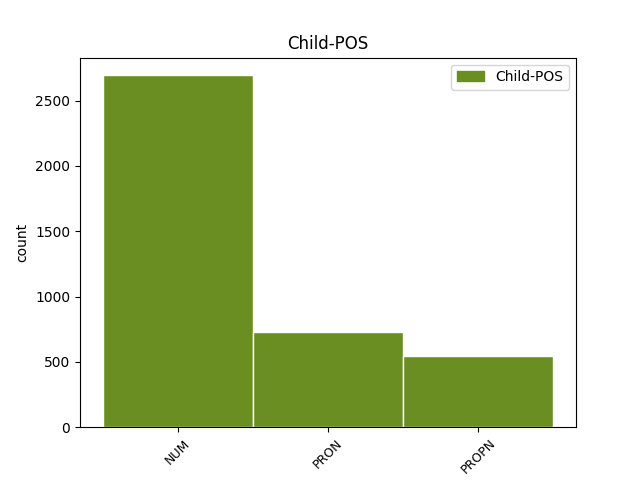

Distribution of features within this leaf

Agreement Rules sorted by frequency.
- When the dependent token is the modifer(mod@gov) of the head token, and the head token is NOUN and the dependent token is NUM.
1 Одно один NUM _ Case=Acc|Gender=Neut 3 mod@gov _ _
2 красное _ _ _ _ 0 _ _ _
3 перышко перышко NOUN _ Animacy=Inan|Case=Acc|Gender=Neut|Number=Sing 0 _ _ _
4 Павлов _ _ _ _ 0 _ _ _
5 взял _ _ _ _ 0 _ _ _
6 с _ _ _ _ 0 _ _ _
7 собой _ _ _ _ 0 _ _ _
8 : _ _ _ _ 0 _ _ _
9 он _ _ _ _ 0 _ _ _
10 уже _ _ _ _ 0 _ _ _
11 научил _ _ _ _ 0 _ _ _
12 близнецов _ _ _ _ 0 _ _ _
13 грубости _ _ _ _ 0 _ _ _
14 недоверия _ _ _ _ 0 _ _ _
15 и _ _ _ _ 0 _ _ _
16 потому _ _ _ _ 0 _ _ _
17 нуждался _ _ _ _ 0 _ _ _
18 в _ _ _ _ 0 _ _ _
19 вещественном _ _ _ _ 0 _ _ _
20 доказательстве _ _ _ _ 0 _ _ _
21 . _ _ _ _ 0 _ _ _
1 Были _ _ _ _ 0 _ _ _
2 и _ _ _ _ 0 _ _ _
3 настоящие _ _ _ _ 0 _ _ _
4 , _ _ _ _ 0 _ _ _
5 великие _ _ _ _ 0 _ _ _
6 , _ _ _ _ 0 _ _ _
7 страшноватые _ _ _ _ 0 _ _ _
8 в _ _ _ _ 0 _ _ _
9 широте _ _ _ _ 0 _ _ _
10 своей _ _ _ _ 0 _ _ _
11 и _ _ _ _ 0 _ _ _
12 затаенном _ _ _ _ 0 _ _ _
13 спокойствии _ _ _ _ 0 _ _ _
14 сибирские _ _ _ _ 0 _ _ _
15 реки река NOUN _ Animacy=Inan|Case=Nom|Gender=Fem|Number=Plur 0 _ _ _
16 : _ _ _ _ 0 _ _ _
17 Обь Обь PROPN _ Animacy=Inan|Case=Nom|Gender=Fem|Number=Sing 15 parataxis _ SpaceAfter=No
18 , _ _ _ _ 0 _ _ _
19 Енисей _ _ _ _ 0 _ _ _
20 , _ _ _ _ 0 _ _ _
21 Иртыш _ _ _ _ 0 _ _ _
22 . _ _ _ _ 0 _ _ _
1 Она _ _ _ _ 0 _ _ _
2 осталась _ _ _ _ 0 _ _ _
3 в _ _ _ _ 0 _ _ _
4 тени _ _ _ _ 0 _ _ _
5 , _ _ _ _ 0 _ _ _
6 над _ _ _ _ 0 _ _ _
7 нею _ _ _ _ 0 _ _ _
8 мы _ _ _ _ 0 _ _ _
9 стали _ _ _ _ 0 _ _ _
10 задумываться _ _ _ _ 0 _ _ _
11 всерьез _ _ _ _ 0 _ _ _
12 только _ _ _ _ 0 _ _ _
13 два два NUM _ Animacy=Inan|Case=Acc|Gender=Masc 0 _ _ _
14 - _ _ _ _ 0 _ _ _
15 три три NUM _ Animacy=Inan|Case=Acc 13 mod@gov _ _
16 года _ _ _ _ 0 _ _ _
17 назад _ _ _ _ 0 _ _ _
18 . _ _ _ _ 0 _ _ _
1 По _ _ _ _ 0 _ _ _
2 главной _ _ _ _ 0 _ _ _
3 улице _ _ _ _ 0 _ _ _
4 города _ _ _ _ 0 _ _ _
5 , _ _ _ _ 0 _ _ _
6 куда _ _ _ _ 0 _ _ _
7 выходила _ _ _ _ 0 _ _ _
8 наша _ _ _ _ 0 _ _ _
9 Малая _ _ _ _ 0 _ _ _
10 Блиновская _ _ _ _ 0 _ _ _
11 , _ _ _ _ 0 _ _ _
12 гуляли _ _ _ _ 0 _ _ _
13 среди _ _ _ _ 0 _ _ _
14 городской _ _ _ _ 0 _ _ _
15 толпы _ _ _ _ 0 _ _ _
16 высокие _ _ _ _ 0 _ _ _
17 , _ _ _ _ 0 _ _ _
18 стройные _ _ _ _ 0 _ _ _
19 , _ _ _ _ 0 _ _ _
20 светловолосые _ _ _ _ 0 _ _ _
21 мужчины _ _ _ _ 0 _ _ _
22 и _ _ _ _ 0 _ _ _
23 под _ _ _ _ 0 _ _ _
24 стать _ _ _ _ 0 _ _ _
25 им _ _ _ _ 0 _ _ _
26 высокие _ _ _ _ 0 _ _ _
27 , _ _ _ _ 0 _ _ _
28 гибкие _ _ _ _ 0 _ _ _
29 женщины женщина NOUN _ Animacy=Anim|Case=Nom|Gender=Fem|Number=Plur 0 _ _ _
30 , _ _ _ _ 0 _ _ _
31 - _ _ _ _ 0 _ _ _
32 все все PRON _ Animacy=Inan|Case=Nom|Gender=Neut|Number=Sing 29 parataxis _ _
33 в _ _ _ _ 0 _ _ _
34 легкой _ _ _ _ 0 _ _ _
35 серой _ _ _ _ 0 _ _ _
36 или _ _ _ _ 0 _ _ _
37 кремовой _ _ _ _ 0 _ _ _
38 фланели _ _ _ _ 0 _ _ _
39 , _ _ _ _ 0 _ _ _
40 в _ _ _ _ 0 _ _ _
41 красивых _ _ _ _ 0 _ _ _
42 мягких _ _ _ _ 0 _ _ _
43 туфлях _ _ _ _ 0 _ _ _
44 на _ _ _ _ 0 _ _ _
45 толстой _ _ _ _ 0 _ _ _
46 каучуковой _ _ _ _ 0 _ _ _
47 подошве _ _ _ _ 0 _ _ _
48 . _ _ _ _ 0 _ _ _
1 Американская _ _ _ _ 0 _ _ _
2 авиация _ _ _ _ 0 _ _ _
3 накануне _ _ _ _ 0 _ _ _
4 бомбила _ _ _ _ 0 _ _ _
5 районы _ _ _ _ 0 _ _ _
6 на _ _ _ _ 0 _ _ _
7 востоке _ _ _ _ 0 _ _ _
8 Афганистана _ _ _ _ 0 _ _ _
9 , _ _ _ _ 0 _ _ _
10 в _ _ _ _ 0 _ _ _
11 которых _ _ _ _ 0 _ _ _
12 , _ _ _ _ 0 _ _ _
13 как _ _ _ _ 0 _ _ _
14 полагают _ _ _ _ 0 _ _ _
15 в _ _ _ _ 0 _ _ _
16 Вашингтоне _ _ _ _ 0 _ _ _
17 , _ _ _ _ 0 _ _ _
18 расположены _ _ _ _ 0 _ _ _
19 подземные _ _ _ _ 0 _ _ _
20 командные _ _ _ _ 0 _ _ _
21 пункты _ _ _ _ 0 _ _ _
22 Осамы _ _ _ _ 0 _ _ _
23 бен бен NOUN _ Animacy=Anim|Case=Gen|Gender=Masc|Number=Sing 0 _ _ _
24 Ладена Ладен PROPN _ Animacy=Anim|Case=Gen|Gender=Masc|Number=Sing 23 flat@name _ _
25 и _ _ _ _ 0 _ _ _
26 его _ _ _ _ 0 _ _ _
27 сети _ _ _ _ 0 _ _ _
28 " _ _ _ _ 0 _ _ _
29 Аль-Каида _ _ _ _ 0 _ _ _
30 " _ _ _ _ 0 _ _ _
31 . _ _ _ _ 0 _ _ _
1 Однако _ _ _ _ 0 _ _ _
2 изменить _ _ _ _ 0 _ _ _
3 политику _ _ _ _ 0 _ _ _
4 ему он PRON _ Case=Dat|Gender=Masc|Number=Sing|Person=3 8 comp:obl _ _
5 было _ _ _ _ 0 _ _ _
6 не _ _ _ _ 0 _ _ _
7 по _ _ _ _ 0 _ _ _
8 силам сила NOUN _ Animacy=Inan|Case=Dat|Gender=Fem|Number=Plur 0 _ _ _
9 . _ _ _ _ 0 _ _ _
1 Две два NUM _ Case=Nom|Gender=Fem 2 mod@gov _ _
2 старшие старший ADJ _ Case=Nom|Degree=Pos|Number=Plur 0 _ _ _
3 уже _ _ _ _ 0 _ _ _
4 вышли _ _ _ _ 0 _ _ _
5 замуж _ _ _ _ 0 _ _ _
6 , _ _ _ _ 0 _ _ _
7 и _ _ _ _ 0 _ _ _
8 как _ _ _ _ 0 _ _ _
9 раз _ _ _ _ 0 _ _ _
10 так _ _ _ _ 0 _ _ _
11 получилось _ _ _ _ 0 _ _ _
12 , _ _ _ _ 0 _ _ _
13 что _ _ _ _ 0 _ _ _
14 была _ _ _ _ 0 _ _ _
15 Шурочкина _ _ _ _ 0 _ _ _
16 очередь _ _ _ _ 0 _ _ _
17 . _ _ _ _ 0 _ _ _
1 Записывая _ _ _ _ 0 _ _ _
2 для _ _ _ _ 0 _ _ _
3 меня _ _ _ _ 0 _ _ _
4 свой _ _ _ _ 0 _ _ _
5 адрес _ _ _ _ 0 _ _ _
6 , _ _ _ _ 0 _ _ _
7 она _ _ _ _ 0 _ _ _
8 надела _ _ _ _ 0 _ _ _
9 очки _ _ _ _ 0 _ _ _
10 , _ _ _ _ 0 _ _ _
11 и _ _ _ _ 0 _ _ _
12 по _ _ _ _ 0 _ _ _
13 ее _ _ _ _ 0 _ _ _
14 постаревшему _ _ _ _ 0 _ _ _
15 лицу _ _ _ _ 0 _ _ _
16 я _ _ _ _ 0 _ _ _
17 поняла _ _ _ _ 0 _ _ _
18 , _ _ _ _ 0 _ _ _
19 что _ _ _ _ 0 _ _ _
20 обе оба NUM _ Case=Nom|Gender=Fem 21 mod@gov _ _
21 мы мы PRON _ Case=Nom|Number=Plur|Person=1 0 _ _ _
22 уже _ _ _ _ 0 _ _ _
23 немолоды _ _ _ _ 0 _ _ _
24 . _ _ _ _ 0 _ _ _
1 Сегодня _ _ _ _ 0 _ _ _
2 мы _ _ _ _ 0 _ _ _
3 отказываемся _ _ _ _ 0 _ _ _
4 от _ _ _ _ 0 _ _ _
5 административно _ _ _ _ 0 _ _ _
6 - _ _ _ _ 0 _ _ _
7 приказной _ _ _ _ 0 _ _ _
8 системы _ _ _ _ 0 _ _ _
9 , _ _ _ _ 0 _ _ _
10 как _ _ _ _ 0 _ _ _
11 от _ _ _ _ 0 _ _ _
12 негодной _ _ _ _ 0 _ _ _
13 , _ _ _ _ 0 _ _ _
14 не _ _ _ _ 0 _ _ _
15 оправдавшей оправдать VERB _ Aspect=Perf|Case=Gen|Gender=Fem|Number=Sing|Tense=Past|VerbForm=Part|Voice=Act 0 _ _ _
16 себя себя PRON _ Case=Gen 15 udep _ _
17 ни _ _ _ _ 0 _ _ _
18 экономически _ _ _ _ 0 _ _ _
19 , _ _ _ _ 0 _ _ _
20 ни _ _ _ _ 0 _ _ _
21 политически _ _ _ _ 0 _ _ _
22 , _ _ _ _ 0 _ _ _
1 Так _ _ _ _ 0 _ _ _
2 что _ _ _ _ 0 _ _ _
3 же _ _ _ _ 0 _ _ _
4 ты ты PRON _ Case=Nom|Number=Sing|Person=2 0 _ _ _
5 , _ _ _ _ 0 _ _ _
6 Монахов Монахов PROPN _ Animacy=Anim|Case=Nom|Gender=Masc|Number=Sing 4 parataxis _ SpaceAfter=No
7 ? _ _ _ _ 0 _ _ _
1 Никому _ _ _ _ 0 _ _ _
2 он он PRON _ Case=Nom|Gender=Masc|Number=Sing|Person=3 0 _ _ _
3 не _ _ _ _ 0 _ _ _
4 был _ _ _ _ 0 _ _ _
5 особенно _ _ _ _ 0 _ _ _
6 нужен _ _ _ _ 0 _ _ _
7 - _ _ _ _ 0 _ _ _
8 он он PRON _ Case=Nom|Gender=Masc|Number=Sing|Person=3 2 parataxis _ _
9 как _ _ _ _ 0 _ _ _
10 он _ _ _ _ 0 _ _ _
11 , _ _ _ _ 0 _ _ _
12 лично _ _ _ _ 0 _ _ _
13 как _ _ _ _ 0 _ _ _
14 Гарусов _ _ _ _ 0 _ _ _
15 . _ _ _ _ 0 _ _ _
1 Потом _ _ _ _ 0 _ _ _
2 к _ _ _ _ 0 _ _ _
3 двум _ _ _ _ 0 _ _ _
4 домам _ _ _ _ 0 _ _ _
5 присоединился _ _ _ _ 0 _ _ _
6 еще _ _ _ _ 0 _ _ _
7 и _ _ _ _ 0 _ _ _
8 третий третий ADJ _ Case=Nom|Degree=Pos|Gender=Masc|Number=Sing 0 _ _ _
9 - _ _ _ _ 0 _ _ _
10 все все PRON _ Animacy=Inan|Case=Nom|Gender=Neut|Number=Sing 8 parataxis _ _
11 на _ _ _ _ 0 _ _ _
12 то _ _ _ _ 0 _ _ _
13 же _ _ _ _ 0 _ _ _
14 единственное _ _ _ _ 0 _ _ _
15 , _ _ _ _ 0 _ _ _
16 как _ _ _ _ 0 _ _ _
17 говаривали _ _ _ _ 0 _ _ _
18 интеллигентные _ _ _ _ 0 _ _ _
19 люди _ _ _ _ 0 _ _ _
20 , _ _ _ _ 0 _ _ _
21 " _ _ _ _ 0 _ _ _
22 удобство _ _ _ _ 0 _ _ _
23 " _ _ _ _ 0 _ _ _
24 . _ _ _ _ 0 _ _ _
1 Мое _ _ _ _ 0 _ _ _
2 сердце _ _ _ _ 0 _ _ _
3 , _ _ _ _ 0 _ _ _
4 моя _ _ _ _ 0 _ _ _
5 боль _ _ _ _ 0 _ _ _
6 неизменно _ _ _ _ 0 _ _ _
7 принадлежали _ _ _ _ 0 _ _ _
8 второму второй ADJ _ Case=Dat|Degree=Pos|Gender=Masc|Number=Sing 0 _ _ _
9 : _ _ _ _ 0 _ _ _
10 не _ _ _ _ 0 _ _ _
11 Пушкину Пушкин PROPN _ Animacy=Anim|Case=Dat|Gender=Masc|Number=Sing 8 parataxis _ SpaceAfter=No
12 , _ _ _ _ 0 _ _ _
13 а _ _ _ _ 0 _ _ _
14 Лермонтову _ _ _ _ 0 _ _ _
15 , _ _ _ _ 0 _ _ _
16 не _ _ _ _ 0 _ _ _
17 Толстому _ _ _ _ 0 _ _ _
18 , _ _ _ _ 0 _ _ _
19 а _ _ _ _ 0 _ _ _
20 Достоевскому _ _ _ _ 0 _ _ _
21 , _ _ _ _ 0 _ _ _
22 не _ _ _ _ 0 _ _ _
23 Алехину _ _ _ _ 0 _ _ _
24 , _ _ _ _ 0 _ _ _
25 а _ _ _ _ 0 _ _ _
26 Капабланке _ _ _ _ 0 _ _ _
27 , _ _ _ _ 0 _ _ _
28 не _ _ _ _ 0 _ _ _
29 Качалову _ _ _ _ 0 _ _ _
30 , _ _ _ _ 0 _ _ _
31 а _ _ _ _ 0 _ _ _
32 Леонидову _ _ _ _ 0 _ _ _
33 , _ _ _ _ 0 _ _ _
34 не _ _ _ _ 0 _ _ _
35 Козловскому _ _ _ _ 0 _ _ _
36 , _ _ _ _ 0 _ _ _
37 а _ _ _ _ 0 _ _ _
38 Лемешеву _ _ _ _ 0 _ _ _
39 . _ _ _ _ 0 _ _ _
1 " _ _ _ _ 0 _ _ _
2 Ведомости _ _ _ _ 0 _ _ _
3 " _ _ _ _ 0 _ _ _
4 описывают _ _ _ _ 0 _ _ _
5 труд _ _ _ _ 0 _ _ _
6 , _ _ _ _ 0 _ _ _
7 проделанный _ _ _ _ 0 _ _ _
8 ведомой вести VERB _ Aspect=Imp|Case=Ins|Gender=Fem|Number=Sing|Tense=Pres|VerbForm=Part|Voice=Pass 0 _ _ _
9 Сергеем Сергей PROPN _ Animacy=Anim|Case=Ins|Gender=Masc|Number=Sing 8 udep _ _
10 Степашиным _ _ _ _ 0 _ _ _
11 Счетной _ _ _ _ 0 _ _ _
12 палатой _ _ _ _ 0 _ _ _
13 : _ _ _ _ 0 _ _ _
14 в _ _ _ _ 0 _ _ _
15 2000 _ _ _ _ 0 _ _ _
16 году _ _ _ _ 0 _ _ _
17 хозяйственная _ _ _ _ 0 _ _ _
18 монополия _ _ _ _ 0 _ _ _
19 перевела _ _ _ _ 0 _ _ _
20 на _ _ _ _ 0 _ _ _
21 счета _ _ _ _ 0 _ _ _
22 неких _ _ _ _ 0 _ _ _
23 целевых _ _ _ _ 0 _ _ _
24 фондов _ _ _ _ 0 _ _ _
25 в _ _ _ _ 0 _ _ _
26 Транскредитбанк _ _ _ _ 0 _ _ _
27 52 _ _ _ _ 0 _ _ _
28 млрд _ _ _ _ 0 _ _ _
29 рублей _ _ _ _ 0 _ _ _
30 , _ _ _ _ 0 _ _ _
31 из _ _ _ _ 0 _ _ _
32 которых _ _ _ _ 0 _ _ _
33 30 _ _ _ _ 0 _ _ _
34 расходовала _ _ _ _ 0 _ _ _
35 совершенно _ _ _ _ 0 _ _ _
36 произвольно _ _ _ _ 0 _ _ _
37 . _ _ _ _ 0 _ _ _
1 Оглядевшись _ _ _ _ 0 _ _ _
2 , _ _ _ _ 0 _ _ _
3 она _ _ _ _ 0 _ _ _
4 увидела _ _ _ _ 0 _ _ _
5 ужаснувшую ужаснуть VERB _ Aspect=Perf|Case=Acc|Gender=Fem|Number=Sing|Tense=Past|VerbForm=Part|Voice=Act 0 _ _ _
6 ее она PRON _ Case=Acc|Gender=Fem|Number=Sing|Person=3 5 comp:obj _ _
7 сцену _ _ _ _ 0 _ _ _
8 . _ _ _ _ 0 _ _ _
1 Мы _ _ _ _ 0 _ _ _
2 знаем _ _ _ _ 0 _ _ _
3 ( _ _ _ _ 0 _ _ _
4 быть _ _ _ _ 0 _ _ _
5 может _ _ _ _ 0 _ _ _
6 , _ _ _ _ 0 _ _ _
7 недостаточно _ _ _ _ 0 _ _ _
8 хорошо _ _ _ _ 0 _ _ _
9 ) _ _ _ _ 0 _ _ _
10 и _ _ _ _ 0 _ _ _
11 чтим _ _ _ _ 0 _ _ _
12 события _ _ _ _ 0 _ _ _
13 и _ _ _ _ 0 _ _ _
14 людей _ _ _ _ 0 _ _ _
15 , _ _ _ _ 0 _ _ _
16 прославивших прославить VERB _ Animacy=Anim|Aspect=Perf|Case=Acc|Number=Plur|Tense=Past|VerbForm=Part|Voice=Act 0 _ _ _
17 Отечество Отечество PROPN _ Animacy=Inan|Case=Acc|Gender=Neut|Number=Sing 16 comp:obj _ SpaceAfter=No
18 . _ _ _ _ 0 _ _ _
1 Британское _ _ _ _ 0 _ _ _
2 правительство _ _ _ _ 0 _ _ _
3 активно _ _ _ _ 0 _ _ _
4 продвигает _ _ _ _ 0 _ _ _
5 заключение _ _ _ _ 0 _ _ _
6 крупной _ _ _ _ 0 _ _ _
7 сделки _ _ _ _ 0 _ _ _
8 по _ _ _ _ 0 _ _ _
9 продаже продажа NOUN _ Animacy=Inan|Case=Dat|Gender=Fem|Number=Sing 0 _ _ _
10 вооружений _ _ _ _ 0 _ _ _
11 Индии Индия PROPN _ Animacy=Inan|Case=Dat|Gender=Fem|Number=Sing 9 comp:obl _ SpaceAfter=No
12 . _ _ _ _ 0 _ _ _
1 Соответственно _ _ _ _ 0 _ _ _
2 , _ _ _ _ 0 _ _ _
3 у _ _ _ _ 0 _ _ _
4 нас _ _ _ _ 0 _ _ _
5 нет _ _ _ _ 0 _ _ _
6 сегодня _ _ _ _ 0 _ _ _
7 оснований _ _ _ _ 0 _ _ _
8 утверждать _ _ _ _ 0 _ _ _
9 , _ _ _ _ 0 _ _ _
10 будто _ _ _ _ 0 _ _ _
11 в _ _ _ _ 0 _ _ _
12 прошлом _ _ _ _ 0 _ _ _
13 существовали _ _ _ _ 0 _ _ _
14 какие-то _ _ _ _ 0 _ _ _
15 " _ _ _ _ 0 _ _ _
16 правильные _ _ _ _ 0 _ _ _
17 " _ _ _ _ 0 _ _ _
18 народы народ NOUN _ Animacy=Inan|Case=Nom|Gender=Masc|Number=Plur 0 _ _ _
19 , _ _ _ _ 0 _ _ _
20 то то PRON _ Animacy=Inan|Case=Nom|Gender=Neut|Number=Sing 18 det _ _
21 есть _ _ _ _ 0 _ _ _
22 те _ _ _ _ 0 _ _ _
23 , _ _ _ _ 0 _ _ _
24 у _ _ _ _ 0 _ _ _
25 которых _ _ _ _ 0 _ _ _
26 с _ _ _ _ 0 _ _ _
27 самого _ _ _ _ 0 _ _ _
28 начала _ _ _ _ 0 _ _ _
29 имелись _ _ _ _ 0 _ _ _
30 в _ _ _ _ 0 _ _ _
31 отличие _ _ _ _ 0 _ _ _
32 от _ _ _ _ 0 _ _ _
33 России _ _ _ _ 0 _ _ _
34 условия _ _ _ _ 0 _ _ _
35 для _ _ _ _ 0 _ _ _
36 рынка _ _ _ _ 0 _ _ _
37 и _ _ _ _ 0 _ _ _
38 демократии _ _ _ _ 0 _ _ _
39 . _ _ _ _ 0 _ _ _
1 И _ _ _ _ 0 _ _ _
2 тогда _ _ _ _ 0 _ _ _
3 этот _ _ _ _ 0 _ _ _
4 совсем _ _ _ _ 0 _ _ _
5 внешний _ _ _ _ 0 _ _ _
6 электрон _ _ _ _ 0 _ _ _
7 , _ _ _ _ 0 _ _ _
8 который _ _ _ _ 0 _ _ _
9 называется _ _ _ _ 0 _ _ _
10 Оже Оже PROPN _ Animacy=Anim|Case=Nom|Gender=Masc|Number=Sing 12 compound _ SpaceAfter=No
11 - _ _ _ _ 0 _ _ _
12 электрон электрон NOUN _ Animacy=Inan|Case=Nom|Gender=Masc|Number=Sing 0 _ _ _
13 , _ _ _ _ 0 _ _ _
14 тоже _ _ _ _ 0 _ _ _
15 вылетает _ _ _ _ 0 _ _ _
16 из _ _ _ _ 0 _ _ _
17 атома _ _ _ _ 0 _ _ _
18 . _ _ _ _ 0 _ _ _
1 Т. то PRON _ Animacy=Inan|Case=Nom|Gender=Neut|Number=Sing 0 _ _ _
2 е. _ _ _ _ 0 _ _ _
3 мы мы PRON _ Case=Nom|Number=Plur|Person=1 1 comp:obj _ _
4 снова _ _ _ _ 0 _ _ _
5 имеем _ _ _ _ 0 _ _ _
6 дело _ _ _ _ 0 _ _ _
7 с _ _ _ _ 0 _ _ _
8 тем _ _ _ _ 0 _ _ _
9 или _ _ _ _ 0 _ _ _
10 иным _ _ _ _ 0 _ _ _
11 вариантом _ _ _ _ 0 _ _ _
12 идеократической _ _ _ _ 0 _ _ _
13 легитимации _ _ _ _ 0 _ _ _
14 . _ _ _ _ 0 _ _ _
1 Во _ _ _ _ 0 _ _ _
2 всяком _ _ _ _ 0 _ _ _
3 случае _ _ _ _ 0 _ _ _
4 , _ _ _ _ 0 _ _ _
5 о _ _ _ _ 0 _ _ _
6 социальных _ _ _ _ 0 _ _ _
7 функциях _ _ _ _ 0 _ _ _
8 современного _ _ _ _ 0 _ _ _
9 государства _ _ _ _ 0 _ _ _
10 можно _ _ _ _ 0 _ _ _
11 сказать _ _ _ _ 0 _ _ _
12 то то PRON _ Animacy=Inan|Case=Acc|Gender=Neut|Number=Sing 0 _ _ _
13 же _ _ _ _ 0 _ _ _
14 , _ _ _ _ 0 _ _ _
15 что что PRON _ Case=Acc 12 mod@relcl _ _
16 и _ _ _ _ 0 _ _ _
17 об _ _ _ _ 0 _ _ _
18 общем _ _ _ _ 0 _ _ _
19 процессе _ _ _ _ 0 _ _ _
20 его _ _ _ _ 0 _ _ _
21 усиления _ _ _ _ 0 _ _ _
22 . _ _ _ _ 0 _ _ _
1 Обоих оба NUM _ Animacy=Anim|Case=Acc|Gender=Masc 4 orphan _ _
2 - _ _ _ _ 0 _ _ _
3 за _ _ _ _ 0 _ _ _
4 жесткость жесткость NOUN _ Animacy=Inan|Case=Acc|Gender=Fem|Number=Sing 0 _ _ _
5 . _ _ _ _ 0 _ _ _
1 Это _ _ _ _ 0 _ _ _
2 убийство _ _ _ _ 0 _ _ _
3 , _ _ _ _ 0 _ _ _
4 по _ _ _ _ 0 _ _ _
5 словам _ _ _ _ 0 _ _ _
6 источника _ _ _ _ 0 _ _ _
7 , _ _ _ _ 0 _ _ _
8 принадлежащего _ _ _ _ 0 _ _ _
9 к _ _ _ _ 0 _ _ _
10 группировке _ _ _ _ 0 _ _ _
11 , _ _ _ _ 0 _ _ _
12 было _ _ _ _ 0 _ _ _
13 предупреждением _ _ _ _ 0 _ _ _
14 другим _ _ _ _ 0 _ _ _
15 палестинцам _ _ _ _ 0 _ _ _
16 , _ _ _ _ 0 _ _ _
17 помогающим помогать VERB _ Aspect=Imp|Case=Dat|Number=Plur|Tense=Pres|VerbForm=Part|Voice=Act 0 _ _ _
18 Израилю Израиль PROPN _ Animacy=Inan|Case=Dat|Gender=Masc|Number=Sing 17 comp:obl _ _
19 выслеживать _ _ _ _ 0 _ _ _
20 и _ _ _ _ 0 _ _ _
21 убивать _ _ _ _ 0 _ _ _
22 десятки _ _ _ _ 0 _ _ _
23 боевиков _ _ _ _ 0 _ _ _
24 . _ _ _ _ 0 _ _ _
1 Ее _ _ _ _ 0 _ _ _
2 недостатки _ _ _ _ 0 _ _ _
3 были _ _ _ _ 0 _ _ _
4 очевидны _ _ _ _ 0 _ _ _
5 с _ _ _ _ 0 _ _ _
6 самого _ _ _ _ 0 _ _ _
7 начала _ _ _ _ 0 _ _ _
8 , _ _ _ _ 0 _ _ _
9 и _ _ _ _ 0 _ _ _
10 мальчишки _ _ _ _ 0 _ _ _
11 много _ _ _ _ 0 _ _ _
12 веков _ _ _ _ 0 _ _ _
13 противились _ _ _ _ 0 _ _ _
14 навязанной навязать VERB _ Aspect=Perf|Case=Dat|Gender=Fem|Number=Sing|Tense=Past|VerbForm=Part|Voice=Pass 0 _ _ _
15 им они PRON _ Case=Dat|Number=Plur|Person=3 14 comp:obl _ _
16 зубрежке _ _ _ _ 0 _ _ _
17 . _ _ _ _ 0 _ _ _
1 В _ _ _ _ 0 _ _ _
2 еврозону _ _ _ _ 0 _ _ _
3 Россия _ _ _ _ 0 _ _ _
4 не _ _ _ _ 0 _ _ _
5 собирается _ _ _ _ 0 _ _ _
6 , _ _ _ _ 0 _ _ _
7 но _ _ _ _ 0 _ _ _
8 залезать _ _ _ _ 0 _ _ _
9 в _ _ _ _ 0 _ _ _
10 долги _ _ _ _ 0 _ _ _
11 ей она PRON _ Case=Dat|Gender=Fem|Number=Sing|Person=3 15 comp:obl _ _
12 точно _ _ _ _ 0 _ _ _
13 ни _ _ _ _ 0 _ _ _
14 к _ _ _ _ 0 _ _ _
15 чему что PRON _ Case=Dat 0 _ _ _
16 . _ _ _ _ 0 _ _ _
1 В _ _ _ _ 0 _ _ _
2 противном _ _ _ _ 0 _ _ _
3 случае _ _ _ _ 0 _ _ _
4 окажется _ _ _ _ 0 _ _ _
5 , _ _ _ _ 0 _ _ _
6 что _ _ _ _ 0 _ _ _
7 в _ _ _ _ 0 _ _ _
8 России _ _ _ _ 0 _ _ _
9 неэффективны _ _ _ _ 0 _ _ _
10 ни _ _ _ _ 0 _ _ _
11 власть _ _ _ _ 0 _ _ _
12 , _ _ _ _ 0 _ _ _
13 ни _ _ _ _ 0 _ _ _
14 оппозиция _ _ _ _ 0 _ _ _
15 , _ _ _ _ 0 _ _ _
16 и _ _ _ _ 0 _ _ _
17 из _ _ _ _ 0 _ _ _
18 двух _ _ _ _ 0 _ _ _
19 неэффективных _ _ _ _ 0 _ _ _
20 структур _ _ _ _ 0 _ _ _
21 победит _ _ _ _ 0 _ _ _
22 та тот DET _ Case=Nom|Gender=Fem|Number=Sing 0 _ _ _
23 , _ _ _ _ 0 _ _ _
24 у _ _ _ _ 0 _ _ _
25 которой _ _ _ _ 0 _ _ _
26 больше _ _ _ _ 0 _ _ _
27 денег _ _ _ _ 0 _ _ _
28 - _ _ _ _ 0 _ _ _
29 то то PRON _ Animacy=Inan|Case=Nom|Gender=Neut|Number=Sing 22 parataxis _ _
30 есть _ _ _ _ 0 _ _ _
31 Кремль _ _ _ _ 0 _ _ _
32 . _ _ _ _ 0 _ _ _
1 - _ _ _ _ 0 _ _ _
2 К _ _ _ _ 0 _ _ _
3 литературе _ _ _ _ 0 _ _ _
4 относятся _ _ _ _ 0 _ _ _
5 тексты _ _ _ _ 0 _ _ _
6 , _ _ _ _ 0 _ _ _
7 материалом _ _ _ _ 0 _ _ _
8 которых _ _ _ _ 0 _ _ _
9 являются _ _ _ _ 0 _ _ _
10 исключительно _ _ _ _ 0 _ _ _
11 слова _ _ _ _ 0 _ _ _
12 человеческого _ _ _ _ 0 _ _ _
13 языка _ _ _ _ 0 _ _ _
14 , _ _ _ _ 0 _ _ _
15 и _ _ _ _ 0 _ _ _
16 не _ _ _ _ 0 _ _ _
17 относятся _ _ _ _ 0 _ _ _
18 тексты _ _ _ _ 0 _ _ _
19 синтетические синтетический ADJ _ Case=Nom|Degree=Pos|Number=Plur 0 _ _ _
20 и _ _ _ _ 0 _ _ _
21 синкретические _ _ _ _ 0 _ _ _
22 , _ _ _ _ 0 _ _ _
23 то то PRON _ Animacy=Inan|Case=Nom|Gender=Neut|Number=Sing 19 det _ _
24 есть _ _ _ _ 0 _ _ _
25 такие _ _ _ _ 0 _ _ _
26 , _ _ _ _ 0 _ _ _
27 в _ _ _ _ 0 _ _ _
28 которых _ _ _ _ 0 _ _ _
29 словесный _ _ _ _ 0 _ _ _
30 компонент _ _ _ _ 0 _ _ _
31 не _ _ _ _ 0 _ _ _
32 может _ _ _ _ 0 _ _ _
33 быть _ _ _ _ 0 _ _ _
34 оторван _ _ _ _ 0 _ _ _
35 от _ _ _ _ 0 _ _ _
36 музыкального _ _ _ _ 0 _ _ _
37 , _ _ _ _ 0 _ _ _
38 визуального _ _ _ _ 0 _ _ _
39 или _ _ _ _ 0 _ _ _
40 какого-либо _ _ _ _ 0 _ _ _
41 иного _ _ _ _ 0 _ _ _
42 . _ _ _ _ 0 _ _ _
1 - _ _ _ _ 0 _ _ _
2 Что что PRON _ Case=Nom 0 _ _ _
3 вы вы PRON _ Case=Nom|Number=Plur|Person=2 2 flat@name _ SpaceAfter=No
4 ! _ _ _ _ 0 _ _ _
1 Читатель _ _ _ _ 0 _ _ _
2 скажет _ _ _ _ 0 _ _ _
3 , _ _ _ _ 0 _ _ _
4 что что PRON _ Case=Nom 6 orphan _ _
5 это _ _ _ _ 0 _ _ _
6 вы вы PRON _ Case=Nom|Number=Plur|Person=2 0 _ _ _
7 про _ _ _ _ 0 _ _ _
8 дилеров _ _ _ _ 0 _ _ _
9 , _ _ _ _ 0 _ _ _
10 вот _ _ _ _ 0 _ _ _
11 собственникам _ _ _ _ 0 _ _ _
12 бизнеса _ _ _ _ 0 _ _ _
13 всё _ _ _ _ 0 _ _ _
14 известно _ _ _ _ 0 _ _ _
15 . _ _ _ _ 0 _ _ _
1 Но _ _ _ _ 0 _ _ _
2 что _ _ _ _ 0 _ _ _
3 касается _ _ _ _ 0 _ _ _
4 науки _ _ _ _ 0 _ _ _
5 , _ _ _ _ 0 _ _ _
6 то _ _ _ _ 0 _ _ _
7 в _ _ _ _ 0 _ _ _
8 значительной _ _ _ _ 0 _ _ _
9 степени _ _ _ _ 0 _ _ _
10 это это PRON _ Animacy=Inan|Case=Nom|Gender=Neut|Number=Sing 12 comp:obj _ _
11 современная _ _ _ _ 0 _ _ _
12 пропаганда пропаганда NOUN _ Animacy=Inan|Case=Nom|Gender=Fem|Number=Sing 0 _ _ _
13 , _ _ _ _ 0 _ _ _
14 что _ _ _ _ 0 _ _ _
15 наука _ _ _ _ 0 _ _ _
16 наша _ _ _ _ 0 _ _ _
17 ( _ _ _ _ 0 _ _ _
18 я _ _ _ _ 0 _ _ _
19 имею _ _ _ _ 0 _ _ _
20 в _ _ _ _ 0 _ _ _
21 виду _ _ _ _ 0 _ _ _
22 в _ _ _ _ 0 _ _ _
23 первую _ _ _ _ 0 _ _ _
24 очередь _ _ _ _ 0 _ _ _
25 Академию _ _ _ _ 0 _ _ _
26 наук _ _ _ _ 0 _ _ _
27 , _ _ _ _ 0 _ _ _
28 которую _ _ _ _ 0 _ _ _
29 я _ _ _ _ 0 _ _ _
30 лучше _ _ _ _ 0 _ _ _
31 знаю _ _ _ _ 0 _ _ _
32 ) _ _ _ _ 0 _ _ _
33 получала _ _ _ _ 0 _ _ _
34 деньги _ _ _ _ 0 _ _ _
35 только _ _ _ _ 0 _ _ _
36 на _ _ _ _ 0 _ _ _
37 оборонные _ _ _ _ 0 _ _ _
38 исследования _ _ _ _ 0 _ _ _
39 , _ _ _ _ 0 _ _ _
40 только _ _ _ _ 0 _ _ _
41 туда _ _ _ _ 0 _ _ _
42 была _ _ _ _ 0 _ _ _
43 повернута _ _ _ _ 0 _ _ _
44 . _ _ _ _ 0 _ _ _
1 Мол _ _ _ _ 0 _ _ _
2 , _ _ _ _ 0 _ _ _
3 вы _ _ _ _ 0 _ _ _
4 хотели _ _ _ _ 0 _ _ _
5 демократии _ _ _ _ 0 _ _ _
6 на _ _ _ _ 0 _ _ _
7 Ближнем _ _ _ _ 0 _ _ _
8 Востоке _ _ _ _ 0 _ _ _
9 и _ _ _ _ 0 _ _ _
10 ради _ _ _ _ 0 _ _ _
11 этого _ _ _ _ 0 _ _ _
12 не _ _ _ _ 0 _ _ _
13 бросили _ _ _ _ 0 _ _ _
14 спасательный _ _ _ _ 0 _ _ _
15 круг _ _ _ _ 0 _ _ _
16 светскому _ _ _ _ 0 _ _ _
17 и _ _ _ _ 0 _ _ _
18 относительно _ _ _ _ 0 _ _ _
19 лояльному лояльный ADJ _ Case=Dat|Degree=Pos|Gender=Neut|Number=Sing 0 _ _ _
20 Европе Европа PROPN _ Animacy=Inan|Case=Dat|Gender=Fem|Number=Sing 19 comp:obl _ _
21 и _ _ _ _ 0 _ _ _
22 России _ _ _ _ 0 _ _ _
23 ФАТХ _ _ _ _ 0 _ _ _
24 . _ _ _ _ 0 _ _ _
1 Что что PRON _ Case=Acc 0 _ _ _
2 - _ _ _ _ 0 _ _ _
3 что что PRON _ Case=Acc 1 flat _ SpaceAfter=No
4 , _ _ _ _ 0 _ _ _
5 а _ _ _ _ 0 _ _ _
6 уж _ _ _ _ 0 _ _ _
7 это _ _ _ _ 0 _ _ _
8 команда _ _ _ _ 0 _ _ _
9 знала _ _ _ _ 0 _ _ _
10 отлично _ _ _ _ 0 _ _ _
11 ! _ _ _ _ 0 _ _ _
1 Особенно _ _ _ _ 0 _ _ _
2 интересны _ _ _ _ 0 _ _ _
3 и _ _ _ _ 0 _ _ _
4 важны _ _ _ _ 0 _ _ _
5 обитатели _ _ _ _ 0 _ _ _
6 самых _ _ _ _ 0 _ _ _
7 просторных _ _ _ _ 0 _ _ _
8 денников _ _ _ _ 0 _ _ _
9 - _ _ _ _ 0 _ _ _
10 они _ _ _ _ 0 _ _ _
11 демонстрируют _ _ _ _ 0 _ _ _
12 миру _ _ _ _ 0 _ _ _
13 нашу _ _ _ _ 0 _ _ _
14 демократию _ _ _ _ 0 _ _ _
15 , _ _ _ _ 0 _ _ _
16 им _ _ _ _ 0 _ _ _
17 и _ _ _ _ 0 _ _ _
18 критика _ _ _ _ 0 _ _ _
19 позволена _ _ _ _ 0 _ _ _
20 , _ _ _ _ 0 _ _ _
21 притом _ _ _ _ 0 _ _ _
22 не _ _ _ _ 0 _ _ _
23 то то PRON _ Animacy=Inan|Case=Nom|Gender=Neut|Number=Sing 27 udep _ _
24 чтоб _ _ _ _ 0 _ _ _
25 исключительно _ _ _ _ 0 _ _ _
26 " _ _ _ _ 0 _ _ _
27 конструктивная конструктивный ADJ _ Case=Nom|Degree=Pos|Gender=Fem|Number=Sing 0 _ _ _
28 " _ _ _ _ 0 _ _ _
29 . _ _ _ _ 0 _ _ _
1 На _ _ _ _ 0 _ _ _
2 решающем _ _ _ _ 0 _ _ _
3 четвертьфинале _ _ _ _ 0 _ _ _
4 по _ _ _ _ 0 _ _ _
5 хоккею _ _ _ _ 0 _ _ _
6 после _ _ _ _ 0 _ _ _
7 забитого _ _ _ _ 0 _ _ _
8 Сашей _ _ _ _ 0 _ _ _
9 Овечкиным _ _ _ _ 0 _ _ _
10 первого _ _ _ _ 0 _ _ _
11 гола _ _ _ _ 0 _ _ _
12 в _ _ _ _ 0 _ _ _
13 ворота _ _ _ _ 0 _ _ _
14 канадцев _ _ _ _ 0 _ _ _
15 огромный _ _ _ _ 0 _ _ _
16 зал _ _ _ _ 0 _ _ _
17 Торино _ _ _ _ 0 _ _ _
18 Эспозиционе _ _ _ _ 0 _ _ _
19 замахал _ _ _ _ 0 _ _ _
20 сотнями _ _ _ _ 0 _ _ _
21 флагов _ _ _ _ 0 _ _ _
22 : _ _ _ _ 0 _ _ _
23 украинскими _ _ _ _ 0 _ _ _
24 , _ _ _ _ 0 _ _ _
25 казахскими _ _ _ _ 0 _ _ _
26 , _ _ _ _ 0 _ _ _
27 литовскими _ _ _ _ 0 _ _ _
28 и _ _ _ _ 0 _ _ _
29 даже _ _ _ _ 0 _ _ _
30 швейцарскими _ _ _ _ 0 _ _ _
31 и _ _ _ _ 0 _ _ _
32 начал _ _ _ _ 0 _ _ _
33 дружно _ _ _ _ 0 _ _ _
34 скандировать _ _ _ _ 0 _ _ _
35 , _ _ _ _ 0 _ _ _
36 как _ _ _ _ 0 _ _ _
37 в _ _ _ _ 0 _ _ _
38 былые _ _ _ _ 0 _ _ _
39 времена _ _ _ _ 0 _ _ _
40 , _ _ _ _ 0 _ _ _
41 " _ _ _ _ 0 _ _ _
42 Шайбу шайба NOUN _ Animacy=Inan|Case=Acc|Gender=Fem|Number=Sing 0 _ _ _
43 ! _ _ _ _ 0 _ _ _
44 Шайбу Шайба PROPN _ Animacy=Inan|Case=Acc|Gender=Fem|Number=Sing 42 flat _ SpaceAfter=No
45 ! _ _ _ _ 0 _ _ _
46 " _ _ _ _ 0 _ _ _
1 Главная _ _ _ _ 0 _ _ _
2 интрига _ _ _ _ 0 _ _ _
3 заключалась _ _ _ _ 0 _ _ _
4 в _ _ _ _ 0 _ _ _
5 том _ _ _ _ 0 _ _ _
6 , _ _ _ _ 0 _ _ _
7 под _ _ _ _ 0 _ _ _
8 чьей чей DET _ Case=Ins|Gender=Fem|Number=Sing 0 _ _ _
9 " _ _ _ _ 0 _ _ _
10 крышей _ _ _ _ 0 _ _ _
11 " _ _ _ _ 0 _ _ _
12 произойдет _ _ _ _ 0 _ _ _
13 объединение _ _ _ _ 0 _ _ _
14 - _ _ _ _ 0 _ _ _
15 РБР РБР PROPN _ Animacy=Inan|Case=Ins|Gender=Masc|Number=Sing 8 parataxis _ _
16 или _ _ _ _ 0 _ _ _
17 ВЭБ _ _ _ _ 0 _ _ _
18 . _ _ _ _ 0 _ _ _
1 Бормоча _ _ _ _ 0 _ _ _
2 про _ _ _ _ 0 _ _ _
3 себя _ _ _ _ 0 _ _ _
4 глуповатую _ _ _ _ 0 _ _ _
5 присказку _ _ _ _ 0 _ _ _
6 : _ _ _ _ 0 _ _ _
7 " _ _ _ _ 0 _ _ _
8 Ветерок ветерок NOUN _ Animacy=Inan|Case=Nom|Gender=Masc|Number=Sing 0 _ _ _
9 ты ты PRON _ Case=Nom|Number=Sing|Person=2 8 flat@name _ SpaceAfter=No
10 , _ _ _ _ 0 _ _ _
11 Ветерочек _ _ _ _ 0 _ _ _
12 ! _ _ _ _ 0 _ _ _
13 Полетим _ _ _ _ 0 _ _ _
14 на _ _ _ _ 0 _ _ _
15 Марс _ _ _ _ 0 _ _ _
16 , _ _ _ _ 0 _ _ _
17 дружочек _ _ _ _ 0 _ _ _
18 ! _ _ _ _ 0 _ _ _
19 " _ _ _ _ 0 _ _ _
20 , _ _ _ _ 0 _ _ _
21 вхожу _ _ _ _ 0 _ _ _
22 в _ _ _ _ 0 _ _ _
23 приемную _ _ _ _ 0 _ _ _
24 начальственного _ _ _ _ 0 _ _ _
25 кабинета _ _ _ _ 0 _ _ _
26 . _ _ _ _ 0 _ _ _
1 Федор _ _ _ _ 0 _ _ _
2 Прокопов _ _ _ _ 0 _ _ _
3 , _ _ _ _ 0 _ _ _
4 вице-президент _ _ _ _ 0 _ _ _
5 Российского _ _ _ _ 0 _ _ _
6 союза _ _ _ _ 0 _ _ _
7 промышленников _ _ _ _ 0 _ _ _
8 и _ _ _ _ 0 _ _ _
9 предпринимателей _ _ _ _ 0 _ _ _
10 : _ _ _ _ 0 _ _ _
11 " _ _ _ _ 0 _ _ _
12 В _ _ _ _ 0 _ _ _
13 некоторых _ _ _ _ 0 _ _ _
14 федеральных _ _ _ _ 0 _ _ _
15 округах _ _ _ _ 0 _ _ _
16 ребята _ _ _ _ 0 _ _ _
17 , _ _ _ _ 0 _ _ _
18 закончившие закончить VERB _ Aspect=Perf|Case=Nom|Number=Plur|Tense=Past|VerbForm=Part|Voice=Act 0 _ _ _
19 , _ _ _ _ 0 _ _ _
20 скажем _ _ _ _ 0 _ _ _
21 , _ _ _ _ 0 _ _ _
22 техникумы _ _ _ _ 0 _ _ _
23 , _ _ _ _ 0 _ _ _
24 то то PRON _ Animacy=Inan|Case=Nom|Gender=Neut|Number=Sing 18 parataxis _ _
25 есть _ _ _ _ 0 _ _ _
26 получившие _ _ _ _ 0 _ _ _
27 среднее _ _ _ _ 0 _ _ _
28 профессиональное _ _ _ _ 0 _ _ _
29 образование _ _ _ _ 0 _ _ _
30 , _ _ _ _ 0 _ _ _
31 получают _ _ _ _ 0 _ _ _
32 заработную _ _ _ _ 0 _ _ _
33 плату _ _ _ _ 0 _ _ _
34 выше _ _ _ _ 0 _ _ _
35 , _ _ _ _ 0 _ _ _
36 чем _ _ _ _ 0 _ _ _
37 выпускники _ _ _ _ 0 _ _ _
38 вузов _ _ _ _ 0 _ _ _
39 " _ _ _ _ 0 _ _ _
40 . _ _ _ _ 0 _ _ _
1 Медведев _ _ _ _ 0 _ _ _
2 сумел _ _ _ _ 0 _ _ _
3 провести _ _ _ _ 0 _ _ _
4 на _ _ _ _ 0 _ _ _
5 сильную _ _ _ _ 0 _ _ _
6 властную _ _ _ _ 0 _ _ _
7 позицию _ _ _ _ 0 _ _ _
8 как _ _ _ _ 0 _ _ _
9 минимум _ _ _ _ 0 _ _ _
10 одного один NUM _ Animacy=Anim|Case=Acc|Gender=Masc 13 mod@gov _ _
11 " _ _ _ _ 0 _ _ _
12 чисто _ _ _ _ 0 _ _ _
13 своего свой DET _ Case=Acc|Gender=Masc|Number=Sing 0 _ _ _
14 " _ _ _ _ 0 _ _ _
15 - _ _ _ _ 0 _ _ _
16 А. _ _ _ _ 0 _ _ _
17 В. _ _ _ _ 0 _ _ _
18 Коновалов _ _ _ _ 0 _ _ _
19 стал _ _ _ _ 0 _ _ _
20 самым _ _ _ _ 0 _ _ _
21 молодым _ _ _ _ 0 _ _ _
22 ( _ _ _ _ 0 _ _ _
23 40 _ _ _ _ 0 _ _ _
24 лет _ _ _ _ 0 _ _ _
25 ) _ _ _ _ 0 _ _ _
26 министром _ _ _ _ 0 _ _ _
27 , _ _ _ _ 0 _ _ _
28 да _ _ _ _ 0 _ _ _
29 каким _ _ _ _ 0 _ _ _
30 ! _ _ _ _ 0 _ _ _
1 Вот _ _ _ _ 0 _ _ _
2 , _ _ _ _ 0 _ _ _
3 например _ _ _ _ 0 _ _ _
4 , _ _ _ _ 0 _ _ _
5 одна один NUM _ Case=Nom|Gender=Fem 0 _ _ _
6 из _ _ _ _ 0 _ _ _
7 них _ _ _ _ 0 _ _ _
8 - _ _ _ _ 0 _ _ _
9 это _ _ _ _ 0 _ _ _
10 то то PRON _ Animacy=Inan|Case=Nom|Gender=Neut|Number=Sing 5 parataxis _ SpaceAfter=No
11 , _ _ _ _ 0 _ _ _
12 что _ _ _ _ 0 _ _ _
13 происходит _ _ _ _ 0 _ _ _
14 с _ _ _ _ 0 _ _ _
15 перешейком _ _ _ _ 0 _ _ _
16 , _ _ _ _ 0 _ _ _
17 вот _ _ _ _ 0 _ _ _
18 с _ _ _ _ 0 _ _ _
19 этим _ _ _ _ 0 _ _ _
20 перешеечком _ _ _ _ 0 _ _ _
21 , _ _ _ _ 0 _ _ _
22 в _ _ _ _ 0 _ _ _
23 тот _ _ _ _ 0 _ _ _
24 момент _ _ _ _ 0 _ _ _
25 , _ _ _ _ 0 _ _ _
26 когда _ _ _ _ 0 _ _ _
27 капля _ _ _ _ 0 _ _ _
28 отрывается _ _ _ _ 0 _ _ _
29 . _ _ _ _ 0 _ _ _
1 В _ _ _ _ 0 _ _ _
2 противном _ _ _ _ 0 _ _ _
3 случае _ _ _ _ 0 _ _ _
4 окажется _ _ _ _ 0 _ _ _
5 , _ _ _ _ 0 _ _ _
6 что _ _ _ _ 0 _ _ _
7 в _ _ _ _ 0 _ _ _
8 России _ _ _ _ 0 _ _ _
9 неэффективны _ _ _ _ 0 _ _ _
10 ни _ _ _ _ 0 _ _ _
11 власть _ _ _ _ 0 _ _ _
12 , _ _ _ _ 0 _ _ _
13 ни _ _ _ _ 0 _ _ _
14 оппозиция _ _ _ _ 0 _ _ _
15 , _ _ _ _ 0 _ _ _
16 и _ _ _ _ 0 _ _ _
17 из _ _ _ _ 0 _ _ _
18 двух _ _ _ _ 0 _ _ _
19 неэффективных _ _ _ _ 0 _ _ _
20 структур _ _ _ _ 0 _ _ _
21 победит _ _ _ _ 0 _ _ _
22 та _ _ _ _ 0 _ _ _
23 , _ _ _ _ 0 _ _ _
24 у _ _ _ _ 0 _ _ _
25 которой _ _ _ _ 0 _ _ _
26 больше _ _ _ _ 0 _ _ _
27 денег _ _ _ _ 0 _ _ _
28 - _ _ _ _ 0 _ _ _
29 то то PRON _ Animacy=Inan|Case=Nom|Gender=Neut|Number=Sing 0 _ _ _
30 есть _ _ _ _ 0 _ _ _
31 Кремль Кремль PROPN _ Animacy=Inan|Case=Nom|Gender=Masc|Number=Sing 29 comp:obj _ SpaceAfter=No
32 . _ _ _ _ 0 _ _ _
1 Еще _ _ _ _ 0 _ _ _
2 три _ _ _ _ 0 _ _ _
3 столетия _ _ _ _ 0 _ _ _
4 назад _ _ _ _ 0 _ _ _
5 была _ _ _ _ 0 _ _ _
6 популярна _ _ _ _ 0 _ _ _
7 Белл Белл PROPN _ Animacy=Anim|Case=Nom|Gender=Masc|Number=Sing 9 compound _ SpaceAfter=No
8 - _ _ _ _ 0 _ _ _
9 Ланкастерская ланкастерский ADJ _ Case=Nom|Degree=Pos|Gender=Fem|Number=Sing 0 _ _ _
10 система _ _ _ _ 0 _ _ _
11 взаимного _ _ _ _ 0 _ _ _
12 обучения _ _ _ _ 0 _ _ _
13 , _ _ _ _ 0 _ _ _
14 в _ _ _ _ 0 _ _ _
15 которой _ _ _ _ 0 _ _ _
16 осуществление _ _ _ _ 0 _ _ _
17 учебного _ _ _ _ 0 _ _ _
18 процесса _ _ _ _ 0 _ _ _
19 во _ _ _ _ 0 _ _ _
20 многом _ _ _ _ 0 _ _ _
21 возлагалось _ _ _ _ 0 _ _ _
22 на _ _ _ _ 0 _ _ _
23 самих _ _ _ _ 0 _ _ _
24 обучающихся _ _ _ _ 0 _ _ _
25 . _ _ _ _ 0 _ _ _
1 То то PRON _ Animacy=Inan|Case=Nom|Gender=Neut|Number=Sing 5 det _ _
2 есть _ _ _ _ 0 _ _ _
3 этим _ _ _ _ 0 _ _ _
4 " _ _ _ _ 0 _ _ _
5 мы мы PRON _ Case=Nom|Number=Plur|Person=1 0 _ _ _
6 " _ _ _ _ 0 _ _ _
7 он _ _ _ _ 0 _ _ _
8 причисляет _ _ _ _ 0 _ _ _
9 себя _ _ _ _ 0 _ _ _
10 к _ _ _ _ 0 _ _ _
11 когорте _ _ _ _ 0 _ _ _
12 людей _ _ _ _ 0 _ _ _
13 - _ _ _ _ 0 _ _ _
14 силовиков _ _ _ _ 0 _ _ _
15 , _ _ _ _ 0 _ _ _
16 которые _ _ _ _ 0 _ _ _
17 и _ _ _ _ 0 _ _ _
18 бегают _ _ _ _ 0 _ _ _
19 сейчас _ _ _ _ 0 _ _ _
20 по _ _ _ _ 0 _ _ _
21 НКО _ _ _ _ 0 _ _ _
22 . _ _ _ _ 0 _ _ _
1 - _ _ _ _ 0 _ _ _
2 Вначале _ _ _ _ 0 _ _ _
3 это _ _ _ _ 0 _ _ _
4 было _ _ _ _ 0 _ _ _
5 мягко _ _ _ _ 0 _ _ _
6 : _ _ _ _ 0 _ _ _
7 встречались _ _ _ _ 0 _ _ _
8 , _ _ _ _ 0 _ _ _
9 расспрашивали _ _ _ _ 0 _ _ _
10 о _ _ _ _ 0 _ _ _
11 деятельности _ _ _ _ 0 _ _ _
12 , _ _ _ _ 0 _ _ _
13 мягко _ _ _ _ 0 _ _ _
14 советовали _ _ _ _ 0 _ _ _
15 : _ _ _ _ 0 _ _ _
16 не _ _ _ _ 0 _ _ _
17 стоит _ _ _ _ 0 _ _ _
18 , _ _ _ _ 0 _ _ _
19 вы _ _ _ _ 0 _ _ _
20 же _ _ _ _ 0 _ _ _
21 понимаете _ _ _ _ 0 _ _ _
22 , _ _ _ _ 0 _ _ _
23 что _ _ _ _ 0 _ _ _
24 это _ _ _ _ 0 _ _ _
25 организация организация NOUN _ Animacy=Inan|Case=Nom|Gender=Fem|Number=Sing 0 _ _ _
26 , _ _ _ _ 0 _ _ _
27 которая который PRON _ Case=Nom 25 mod@relcl _ _
28 на _ _ _ _ 0 _ _ _
29 американские _ _ _ _ 0 _ _ _
30 деньги _ _ _ _ 0 _ _ _
31 . _ _ _ _ 0 _ _ _
1 Так _ _ _ _ 0 _ _ _
2 получилось _ _ _ _ 0 _ _ _
3 , _ _ _ _ 0 _ _ _
4 что _ _ _ _ 0 _ _ _
5 , _ _ _ _ 0 _ _ _
6 посещая _ _ _ _ 0 _ _ _
7 Минск _ _ _ _ 0 _ _ _
8 в _ _ _ _ 0 _ _ _
9 былые _ _ _ _ 0 _ _ _
10 годы _ _ _ _ 0 _ _ _
11 регулярно _ _ _ _ 0 _ _ _
12 , _ _ _ _ 0 _ _ _
13 я _ _ _ _ 0 _ _ _
14 все _ _ _ _ 0 _ _ _
15 равно _ _ _ _ 0 _ _ _
16 " _ _ _ _ 0 _ _ _
17 крутил _ _ _ _ 0 _ _ _
18 педали _ _ _ _ 0 _ _ _
19 " _ _ _ _ 0 _ _ _
20 : _ _ _ _ 0 _ _ _
21 встречался _ _ _ _ 0 _ _ _
22 с _ _ _ _ 0 _ _ _
23 друзьями _ _ _ _ 0 _ _ _
24 по _ _ _ _ 0 _ _ _
25 институту _ _ _ _ 0 _ _ _
26 , _ _ _ _ 0 _ _ _
27 бывал _ _ _ _ 0 _ _ _
28 в _ _ _ _ 0 _ _ _
29 театрах _ _ _ _ 0 _ _ _
30 , _ _ _ _ 0 _ _ _
31 ставил _ _ _ _ 0 _ _ _
32 спектакль _ _ _ _ 0 _ _ _
33 в _ _ _ _ 0 _ _ _
34 Театре _ _ _ _ 0 _ _ _
35 им. _ _ _ _ 0 _ _ _
36 Я я PRON _ Case=Gen|Number=Sing|Person=1 0 _ _ _
37 . _ _ _ _ 0 _ _ _
38 Купалы Купала PROPN _ Animacy=Anim|Case=Gen|Gender=Masc|Number=Sing 36 flat@name _ SpaceAfter=No
39 . _ _ _ _ 0 _ _ _
1 Так _ _ _ _ 0 _ _ _
2 считает _ _ _ _ 0 _ _ _
3 Главком _ _ _ _ 0 _ _ _
4 ВМФ _ _ _ _ 0 _ _ _
5 России _ _ _ _ 0 _ _ _
6 Владимир _ _ _ _ 0 _ _ _
7 Куроедов _ _ _ _ 0 _ _ _
8 , _ _ _ _ 0 _ _ _
9 завершивший _ _ _ _ 0 _ _ _
10 плановую _ _ _ _ 0 _ _ _
11 комплексную _ _ _ _ 0 _ _ _
12 проверку проверка NOUN _ Animacy=Inan|Case=Acc|Gender=Fem|Number=Sing 0 _ _ _
13 ТОФ ТОФ PROPN _ Animacy=Inan|Case=Acc|Gender=Masc|Number=Sing 12 comp:obj _ SpaceAfter=No
14 . _ _ _ _ 0 _ _ _
1 Какое _ _ _ _ 0 _ _ _
2 глубокое _ _ _ _ 0 _ _ _
3 и _ _ _ _ 0 _ _ _
4 волнующее _ _ _ _ 0 _ _ _
5 чувство _ _ _ _ 0 _ _ _
6 вызывали _ _ _ _ 0 _ _ _
7 во _ _ _ _ 0 _ _ _
8 мне _ _ _ _ 0 _ _ _
9 их _ _ _ _ 0 _ _ _
10 непричастность _ _ _ _ 0 _ _ _
11 к _ _ _ _ 0 _ _ _
12 привычной привычный ADJ _ Case=Dat|Degree=Pos|Gender=Fem|Number=Sing 0 _ _ _
13 мне я PRON _ Case=Dat|Number=Sing|Person=1 12 comp:obl _ _
14 действительности _ _ _ _ 0 _ _ _
15 , _ _ _ _ 0 _ _ _
16 их _ _ _ _ 0 _ _ _
17 дивно _ _ _ _ 0 _ _ _
18 слаженные _ _ _ _ 0 _ _ _
19 , _ _ _ _ 0 _ _ _
20 узкие _ _ _ _ 0 _ _ _
21 тела _ _ _ _ 0 _ _ _
22 , _ _ _ _ 0 _ _ _
23 четкая _ _ _ _ 0 _ _ _
24 , _ _ _ _ 0 _ _ _
25 выразительная _ _ _ _ 0 _ _ _
26 лепка _ _ _ _ 0 _ _ _
27 лиц _ _ _ _ 0 _ _ _
28 . _ _ _ _ 0 _ _ _
1 - _ _ _ _ 0 _ _ _
2 Я _ _ _ _ 0 _ _ _
3 сам _ _ _ _ 0 _ _ _
4 подумал _ _ _ _ 0 _ _ _
5 : _ _ _ _ 0 _ _ _
6 вдруг _ _ _ _ 0 _ _ _
7 она она PRON _ Case=Nom|Gender=Fem|Number=Sing|Person=3 8 subj@pass _ _
8 приученная приучить VERB _ Aspect=Perf|Case=Nom|Gender=Fem|Number=Sing|Tense=Past|VerbForm=Part|Voice=Pass 0 _ _ _
9 , _ _ _ _ 0 _ _ _
10 и _ _ _ _ 0 _ _ _
11 тихонечко _ _ _ _ 0 _ _ _
12 пошел _ _ _ _ 0 _ _ _
13 к _ _ _ _ 0 _ _ _
14 ней _ _ _ _ 0 _ _ _
15 . _ _ _ _ 0 _ _ _
Disagree Examples:
1 Кабинет _ _ _ _ 0 _ _ _
2 отличался _ _ _ _ 0 _ _ _
3 скромностью _ _ _ _ 0 _ _ _
4 , _ _ _ _ 0 _ _ _
5 присущей присущий ADJ _ Case=Ins|Degree=Pos|Gender=Fem|Number=Sing 0 _ _ _
6 Семену Семен PROPN _ Animacy=Anim|Case=Dat|Gender=Masc|Number=Sing 5 comp:obl _ _
7 Еремеевичу _ _ _ _ 0 _ _ _
8 . _ _ _ _ 0 _ _ _
1 В _ _ _ _ 0 _ _ _
2 глубине _ _ _ _ 0 _ _ _
3 стоял _ _ _ _ 0 _ _ _
4 широкий _ _ _ _ 0 _ _ _
5 письменный _ _ _ _ 0 _ _ _
6 стол _ _ _ _ 0 _ _ _
7 с _ _ _ _ 0 _ _ _
8 бронзовыми _ _ _ _ 0 _ _ _
9 чернильницами _ _ _ _ 0 _ _ _
10 и _ _ _ _ 0 _ _ _
11 перед _ _ _ _ 0 _ _ _
12 ним _ _ _ _ 0 _ _ _
13 два два NUM _ Case=Nom|Gender=Neut 15 mod@gov _ _
14 кожаных _ _ _ _ 0 _ _ _
15 кресла кресло NOUN _ Animacy=Inan|Case=Gen|Gender=Neut|Number=Sing 0 _ _ _
16 . _ _ _ _ 0 _ _ _
1 Ровно _ _ _ _ 0 _ _ _
2 в _ _ _ _ 0 _ _ _
3 десять десять NUM _ Case=Acc 4 mod@gov _ _
4 часов час NOUN _ Animacy=Inan|Case=Gen|Gender=Masc|Number=Plur 0 _ _ _
5 раздался _ _ _ _ 0 _ _ _
6 короткий _ _ _ _ 0 _ _ _
7 звонок _ _ _ _ 0 _ _ _
8 . _ _ _ _ 0 _ _ _
1 Она _ _ _ _ 0 _ _ _
2 , _ _ _ _ 0 _ _ _
3 видимо _ _ _ _ 0 _ _ _
4 , _ _ _ _ 0 _ _ _
5 волновалась _ _ _ _ 0 _ _ _
6 , _ _ _ _ 0 _ _ _
7 потому _ _ _ _ 0 _ _ _
8 что _ _ _ _ 0 _ _ _
9 забыла _ _ _ _ 0 _ _ _
10 закрыть _ _ _ _ 0 _ _ _
11 за _ _ _ _ 0 _ _ _
12 собой _ _ _ _ 0 _ _ _
13 обе оба NUM _ Animacy=Inan|Case=Acc|Gender=Fem 17 mod@gov _ _
14 обитые _ _ _ _ 0 _ _ _
15 черной _ _ _ _ 0 _ _ _
16 клеенкой _ _ _ _ 0 _ _ _
17 двери дверь NOUN _ Animacy=Inan|Case=Gen|Gender=Fem|Number=Sing 0 _ _ _
18 . _ _ _ _ 0 _ _ _
1 Своевременно _ _ _ _ 0 _ _ _
2 исправлять _ _ _ _ 0 _ _ _
3 повреждения _ _ _ _ 0 _ _ _
4 не _ _ _ _ 0 _ _ _
5 удавалось _ _ _ _ 0 _ _ _
6 по _ _ _ _ 0 _ _ _
7 трем _ _ _ _ 0 _ _ _
8 причинам _ _ _ _ 0 _ _ _
9 : _ _ _ _ 0 _ _ _
10 во-первых _ _ _ _ 0 _ _ _
11 , _ _ _ _ 0 _ _ _
12 заявка _ _ _ _ 0 _ _ _
13 на _ _ _ _ 0 _ _ _
14 специалистов _ _ _ _ 0 _ _ _
15 , _ _ _ _ 0 _ _ _
16 посланная _ _ _ _ 0 _ _ _
17 за _ _ _ _ 0 _ _ _
18 номером _ _ _ _ 0 _ _ _
19 таким-то _ _ _ _ 0 _ _ _
20 , _ _ _ _ 0 _ _ _
21 удовлетворена _ _ _ _ 0 _ _ _
22 не _ _ _ _ 0 _ _ _
23 более _ _ _ _ 0 _ _ _
24 чем _ _ _ _ 0 _ _ _
25 на _ _ _ _ 0 _ _ _
26 десять десять NUM _ Case=Acc 27 mod@gov _ _
27 процентов процент NOUN _ Animacy=Inan|Case=Gen|Gender=Masc|Number=Plur 0 _ _ _
28 и _ _ _ _ 0 _ _ _
29 линейные _ _ _ _ 0 _ _ _
30 кадры _ _ _ _ 0 _ _ _
31 до _ _ _ _ 0 _ _ _
32 сих _ _ _ _ 0 _ _ _
33 пор _ _ _ _ 0 _ _ _
34 не _ _ _ _ 0 _ _ _
35 укомплектованы _ _ _ _ 0 _ _ _
36 ; _ _ _ _ 0 _ _ _
37 во-вторых _ _ _ _ 0 _ _ _
38 , _ _ _ _ 0 _ _ _
39 работу _ _ _ _ 0 _ _ _
40 тормозили _ _ _ _ 0 _ _ _
41 неблагоприятные _ _ _ _ 0 _ _ _
42 метеорологические _ _ _ _ 0 _ _ _
43 условия _ _ _ _ 0 _ _ _
44 ; _ _ _ _ 0 _ _ _
45 в-третьих _ _ _ _ 0 _ _ _
46 … _ _ _ _ 0 _ _ _